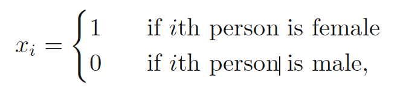
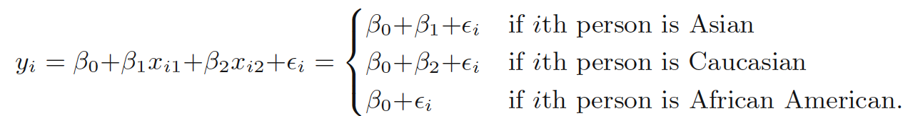
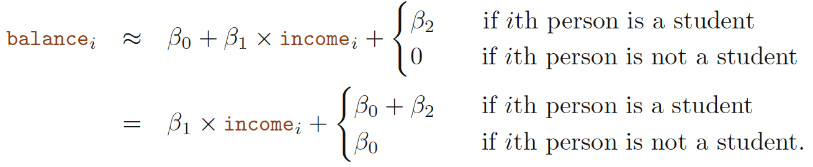
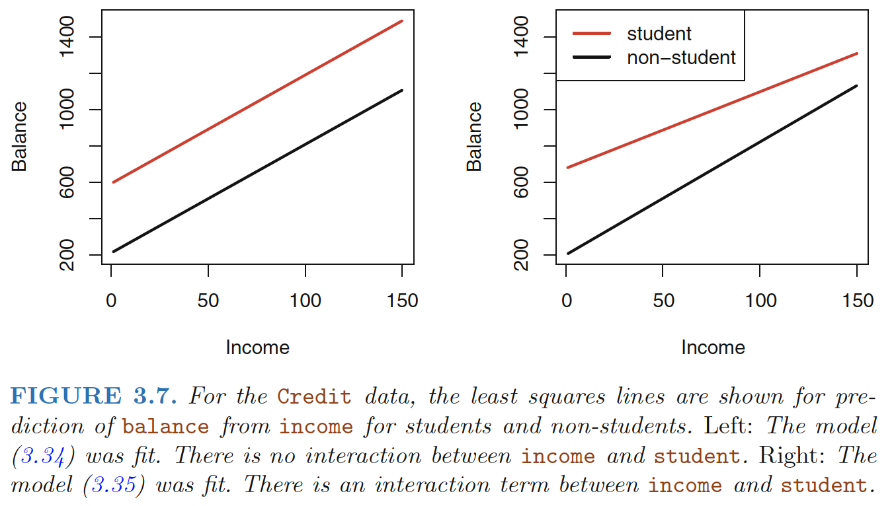
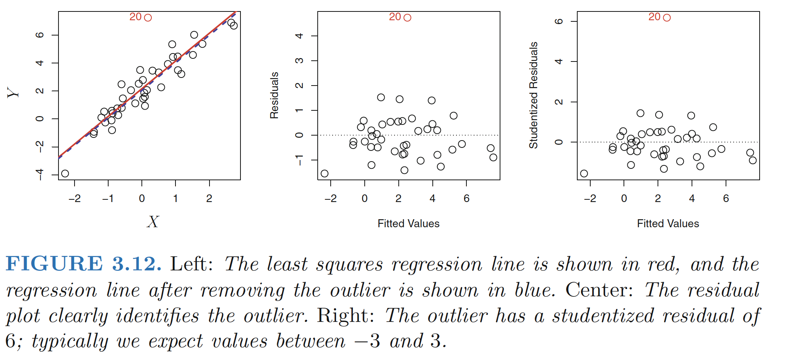
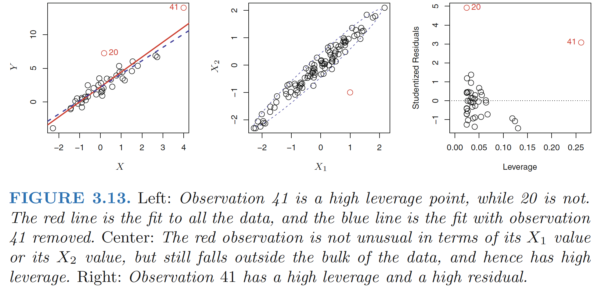
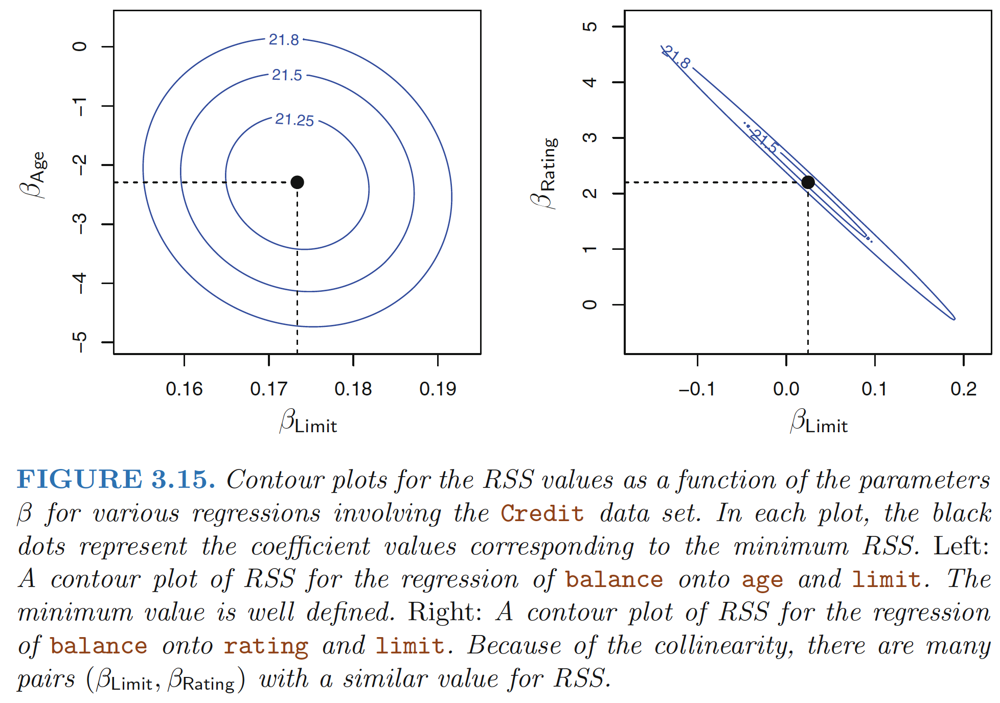

<!DOCTYPE html>


  


<html class="theme-next mist use-motion" lang>
<head><meta name="generator" content="Hexo 3.9.0">
  <!-- hexo-inject:begin --><!-- hexo-inject:end --><meta charset="UTF-8">

<script>
    (function(){
        if(''){
            if (prompt('Show me your password') !== ''){
                alert('Blah, wrong.');
                history.back();
            }
        }
    })();
</script>


<meta http-equiv="X-UA-Compatible" content="IE=edge">
<meta name="viewport" content="width=device-width, initial-scale=1, maximum-scale=2">
<meta name="theme-color" content="#222">


  
  
  <link rel="stylesheet" href="/lib/Han/dist/han.min.css?v=3.3">


  
  
  <link rel="stylesheet" href="/lib/fancybox/source/jquery.fancybox.css">


  

<link rel="stylesheet" href="//maxcdn.bootstrapcdn.com/font-awesome/4.7.0/css/font-awesome.min.css">

<link rel="stylesheet" href="/css/main.css?v=7.1.2">


  <link rel="apple-touch-icon" sizes="180x180" href="/images/apple-touch-icon-next.png?v=7.1.2">


  <link rel="icon" type="image/png" sizes="32x32" href="/images/favicon-32x32-next.png?v=7.1.2">


  <link rel="icon" type="image/png" sizes="16x16" href="/images/favicon-16x16-next.png?v=7.1.2">


  <link rel="mask-icon" href="/images/logo.svg?v=7.1.2" color="#222">


<script id="hexo.configurations">
  var NexT = window.NexT || {};
  var CONFIG = {
    root: '/',
    scheme: 'Mist',
    version: '7.1.2',
    sidebar: {"position":"right","display":"hide","offset":12,"onmobile":false,"dimmer":false},
    back2top: true,
    back2top_sidebar: false,
    fancybox: true,
    fastclick: true,
    lazyload: true,
    tabs: true,
    motion: {"enable":true,"async":false,"transition":{"post_block":"fadeIn","post_header":"slideDownIn","post_body":"slideDownIn","coll_header":"slideLeftIn","sidebar":"slideUpIn"}},
    algolia: {
      applicationID: '',
      apiKey: '',
      indexName: '',
      hits: {"per_page":10},
      labels: {"input_placeholder":"Search for Posts","hits_empty":"We didn't find any results for the search: ${query}","hits_stats":"${hits} results found in ${time} ms"}
    }
  };
</script>


  


  <meta name="description" content="Qualitative Predictors Predictors with Only Two Levels Suppose that we wish to investigate differences in credit card balance between males and females, ignoring the other variables for the moment. If">
<meta name="keywords" content="Linear Regression,Regression">
<meta property="og:type" content="article">
<meta property="og:title" content="Study Note: Linear Regression Part II - Potential Problems">
<meta property="og:url" content="https://nancyyanyu.github.io/posts/4df00c7b/index.html">
<meta property="og:site_name" content="Nancy&#39;s Notes">
<meta property="og:description" content="Qualitative Predictors Predictors with Only Two Levels Suppose that we wish to investigate differences in credit card balance between males and females, ignoring the other variables for the moment. If">
<meta property="og:locale" content="default">
<meta property="og:image" content="https://nancyyanyu.github.io/posts/4df00c7b/8.png">
<meta property="og:image" content="https://nancyyanyu.github.io/posts/4df00c7b/9.png">
<meta property="og:image" content="https://nancyyanyu.github.io/posts/4df00c7b/10.png">
<meta property="og:image" content="https://nancyyanyu.github.io/posts/4df00c7b/11.png">
<meta property="og:image" content="https://nancyyanyu.github.io/posts/4df00c7b/12.png">
<meta property="og:image" content="https://nancyyanyu.github.io/posts/4df00c7b/13.png">
<meta property="og:image" content="https://nancyyanyu.github.io/posts/4df00c7b/14.png">
<meta property="og:image" content="https://nancyyanyu.github.io/posts/4df00c7b/15.png">
<meta property="og:image" content="https://nancyyanyu.github.io/posts/4df00c7b/17.png">
<meta property="og:image" content="https://nancyyanyu.github.io/posts/4df00c7b/16.png">
<meta property="og:image" content="https://nancyyanyu.github.io/posts/4df00c7b/18.png">
<meta property="og:image" content="https://nancyyanyu.github.io/posts/4df00c7b/19.png">
<meta property="og:image" content="https://nancyyanyu.github.io/posts/4df00c7b/20.png">
<meta property="og:image" content="https://nancyyanyu.github.io/posts/4df00c7b/21.png">
<meta property="og:image" content="https://nancyyanyu.github.io/posts/4df00c7b/23.png">
<meta property="og:image" content="https://nancyyanyu.github.io/posts/4df00c7b/22.png">
<meta property="og:image" content="https://nancyyanyu.github.io/posts/4df00c7b/24.png">
<meta property="og:updated_time" content="2020-07-20T01:08:28.184Z">
<meta name="twitter:card" content="summary">
<meta name="twitter:title" content="Study Note: Linear Regression Part II - Potential Problems">
<meta name="twitter:description" content="Qualitative Predictors Predictors with Only Two Levels Suppose that we wish to investigate differences in credit card balance between males and females, ignoring the other variables for the moment. If">
<meta name="twitter:image" content="https://nancyyanyu.github.io/posts/4df00c7b/8.png">


  <link rel="alternate" href="/atom.xml" title="Nancy's Notes" type="application/atom+xml">


  
  
  <link rel="canonical" href="https://nancyyanyu.github.io/posts/4df00c7b/">


<script id="page.configurations">
  CONFIG.page = {
    sidebar: "",
  };
</script>

  <title>Study Note: Linear Regression Part II - Potential Problems | Nancy's Notes</title>
  


  <noscript>
  <style>
  .use-motion .motion-element,
  .use-motion .brand,
  .use-motion .menu-item,
  .sidebar-inner,
  .use-motion .post-block,
  .use-motion .pagination,
  .use-motion .comments,
  .use-motion .post-header,
  .use-motion .post-body,
  .use-motion .collection-title { opacity: initial; }

  .use-motion .logo,
  .use-motion .site-title,
  .use-motion .site-subtitle {
    opacity: initial;
    top: initial;
  }

  .use-motion .logo-line-before i { left: initial; }
  .use-motion .logo-line-after i { right: initial; }
  </style>
</noscript><!-- hexo-inject:begin --><!-- hexo-inject:end -->

</head>

<body itemscope itemtype="http://schema.org/WebPage" lang="default">

  
  
    
  

  <!-- hexo-inject:begin --><!-- hexo-inject:end --><div class="container sidebar-position-right page-post-detail">
    <div class="headband"></div>

    <header id="header" class="header" itemscope itemtype="http://schema.org/WPHeader">
      <div class="header-inner"><div class="site-brand-wrapper">
  <div class="site-meta">
    

    <div class="custom-logo-site-title">
      <a href="/" class="brand" rel="start">
        <span class="logo-line-before"><i></i></span>
        <span class="site-title">Nancy's Notes</span>
        <span class="logo-line-after"><i></i></span>
      </a>
    </div>
    
      
        <p class="site-subtitle">Code changes world!</p>
      
    
    
  </div>

  <div class="site-nav-toggle">
    <button aria-label="Toggle navigation bar">
      <span class="btn-bar"></span>
      <span class="btn-bar"></span>
      <span class="btn-bar"></span>
    </button>
  </div>
</div>


<nav class="site-nav">
  
    <ul id="menu" class="menu">
      
        
        
        
          
          <li class="menu-item menu-item-home">

    
    
    
      
    

    

    <a href="/" rel="section"><i class="menu-item-icon fa fa-fw fa-home"></i> <br>Home</a>

  </li>
        
        
        
          
          <li class="menu-item menu-item-resumé">

    
    
    
      
    

    

    <a href="/resume/" rel="section"><i class="menu-item-icon fa fa-fw fa-user"></i> <br>Resumé</a>

  </li>
        
        
        
          
          <li class="menu-item menu-item-projects">

    
    
    
      
    

    

    <a href="/project" rel="section"><i class="menu-item-icon fa fa-fw fa-sitemap"></i> <br>Projects</a>

  </li>
        
        
        
          
          <li class="menu-item menu-item-ml">

    
    
    
      
    

    

    <a href="/categories/Machine-Learning" rel="section"><i class="menu-item-icon fa fa-fw fa-th"></i> <br>ML</a>

  </li>
        
        
        
          
          <li class="menu-item menu-item-big-data">

    
    
    
      
    

    

    <a href="/categories/Big-Data" rel="section"><i class="menu-item-icon fa fa-fw fa-archive"></i> <br>Big Data</a>

  </li>
        
        
        
          
          <li class="menu-item menu-item-journal">

    
    
    
      
    

    

    <a href="/categories/Journal/" rel="section"><i class="menu-item-icon fa fa-fw fa-coffee"></i> <br>Journal</a>

  </li>
        
        
        
          
          <li class="menu-item menu-item-手帳">

    
    
    
      
    

    

    <a href="/techou/" rel="section"><i class="menu-item-icon fa fa-fw fa-heart"></i> <br>手帳</a>

  </li>

      
      
    </ul>
  

  
    

  

  
</nav>


  


</div>
    </header>

    


    <main id="main" class="main">
      <div class="main-inner">
        <div class="content-wrap">
          
          <div id="content" class="content">
            

  <div id="posts" class="posts-expand">
    

  

  
  
  

  

  <article class="post post-type-normal" itemscope itemtype="http://schema.org/Article">
  
  
  
  <div class="post-block">
    <link itemprop="mainEntityOfPage" href="https://nancyyanyu.github.io/posts/4df00c7b/">

    <span hidden itemprop="author" itemscope itemtype="http://schema.org/Person">
      <meta itemprop="name" content="Nancy Yan">
      <meta itemprop="description" content>
      <meta itemprop="image" content="/images/avatar.gif">
    </span>

    <span hidden itemprop="publisher" itemscope itemtype="http://schema.org/Organization">
      <meta itemprop="name" content="Nancy's Notes">
    </span>

    
      <header class="post-header">

        
        
          <h1 class="post-title" itemprop="name headline">Study Note: Linear Regression Part II - Potential Problems

              
            
          </h1>
        

        <div class="post-meta">
          <span class="post-time">

            
            
            

            
              <span class="post-meta-item-icon">
                <i class="fa fa-calendar-o"></i>
              </span>
              
                <span class="post-meta-item-text">Posted on</span>
              

              
                
              

              <time title="Created: 2019-10-19 17:56:41" itemprop="dateCreated datePublished" datetime="2019-10-19T17:56:41-05:00">2019-10-19</time>
            

            
              

              
                
                <span class="post-meta-divider">|</span>
                

                <span class="post-meta-item-icon">
                  <i class="fa fa-calendar-check-o"></i>
                </span>
                
                  <span class="post-meta-item-text">Edited on</span>
                
                <time title="Modified: 2020-07-19 20:08:28" itemprop="dateModified" datetime="2020-07-19T20:08:28-05:00">2020-07-19</time>
              
            
          </span>

          
            <span class="post-category">
            
              <span class="post-meta-divider">|</span>
            
              <span class="post-meta-item-icon">
                <i class="fa fa-folder-o"></i>
              </span>
              
                <span class="post-meta-item-text">In</span>
              
              
                <span itemprop="about" itemscope itemtype="http://schema.org/Thing"><a href="/categories/Machine-Learning/" itemprop="url" rel="index"><span itemprop="name">Machine Learning</span></a></span>

                
                
              
            </span>
          

          
            
            
          

          
          

          

          
            <div class="post-symbolscount">
              

              
                <span class="post-meta-item-icon">
                  <i class="fa fa-file-word-o"></i>
                </span>
                
                  <span class="post-meta-item-text">Symbols count in article: </span>
                
                <span title="Symbols count in article">10k</span>
              

              
                <span class="post-meta-divider">|</span>
              

              
                <span class="post-meta-item-icon">
                  <i class="fa fa-clock-o"></i>
                </span>
                
                  <span class="post-meta-item-text">Reading time &asymp;</span>
                
                <span title="Reading time">9 mins.</span>
              
            </div>
          

          

        </div>
      </header>
    

    
    
    
    <div class="post-body han-init-context" itemprop="articleBody">

      
      

      
        <h1 id="qualitative-predictors">Qualitative Predictors</h1>
<h2 id="predictors-with-only-two-levels">Predictors with Only Two Levels</h2>
<p>Suppose that we wish to investigate differences in credit card balance between males and females, ignoring the other variables for the moment. If a qualitative predictor (also known as a <strong>factor</strong>) only has two <strong>levels</strong>, or possible values, then incorporating it into a regression model is very simple. We simply create an indicator or <strong>dummy variable</strong> that takes on two possible numerical values.</p>
<p> and use this variable as a predictor in the regression equation. This results in the model</p>
<p></p>
<a id="more"></a>
<p>Now β0 can be interpreted as the average credit card balance among males, β0 + β1 as the average credit card balance among females</p>
<h2 id="qualitative-predictors-with-more-than-two-levels">Qualitative Predictors with More than Two Levels</h2>
<p>When a qualitative predictor has more than two levels, we can create additional dummy variables. For example, for the ethnicity variable we create two dummy variables. The first could be</p>
<p> and the second could be </p>
<p>Then both of these variables can be used in the regression equation, in order to obtain the model</p>
<p></p>
<p><strong>Baseline</strong></p>
<ul>
<li>There will always be <strong>one fewer</strong> dummy variable than the number of levels. The level with no dummy variable—African American in this example—is known as the baseline.</li>
</ul>
<p></p>
<p>The p-values associated with the coefficient estimates for the two dummy variables are very large, suggesting no statistical evidence of a real difference in credit card balance between the ethnicities</p>
<blockquote>
<p>The coefficients and their p-values do depend on the choice of dummy variable coding</p>
</blockquote>
<p>Rather than rely on the individual coefficients, we can use an <strong>F-test</strong> to test H0 : β1 = β2 = 0; this does not depend on the coding.</p>
<p>This F-test has a p-value of 0.96, indicating that we cannot reject the null hypothesis that there is no relationship between balance and ethnicity.</p>
<h1 id="extensions-of-the-linear-model">Extensions of the Linear Model</h1>
<p>Two of the most important assumptions state that the relationship between the predictors and response are <strong>additive</strong> and <strong>linear</strong>. - <strong>Additive</strong>: the effect of changes in a predictor <span class="math inline">\(X_j\)</span> on the response <span class="math inline">\(Y\)</span> is independent of the values of the other predictors - <strong>Linear</strong>: the change in the response <span class="math inline">\(Y\)</span> due to a one-unit change in <span class="math inline">\(X_j\)</span> is constant, regardless of the value of <span class="math inline">\(X_j\)</span></p>
<h2 id="removing-the-additive-assumption">Removing the Additive Assumption</h2>
<p>Consider the standard linear regression model with two variables, <span class="math display">\[\begin{align}
Y = β_0 + β_1X_1 + β_2X_2 + \epsilon
\end{align}\]</span></p>
<p>One way of extending this model to allow for interaction effects is to include a third predictor, called an <strong>interaction term</strong>:</p>
<p><span class="math display">\[\begin{align}
Y = β_0 + β_1X_1 + β_2X_2 +  β_3X_1X_2 + \epsilon 
\end{align}\]</span></p>
<p><strong>How does inclusion of this interaction term relax the additive assumption?</strong></p>
<p>The model above could be written as: <span class="math display">\[\begin{align}
Y &amp;= β_0 + (β_1+β_3X_2)X_1 + β_2X_2 + \epsilon  \\
&amp;= β_0 + \tilde{β}_1X_1 + β_2X_2 + \epsilon
\end{align}\]</span></p>
<p>Since <span class="math inline">\(\tilde{β}_1\)</span> changes with <span class="math inline">\(X_2\)</span>, the effect of <span class="math inline">\(X_1\)</span> on <span class="math inline">\(Y\)</span> is no longer constant: adjusting <span class="math inline">\(X_2\)</span> will change the impact of <span class="math inline">\(X_1\)</span> on <span class="math inline">\(Y\)</span>.</p>
<p></p>
<ul>
<li>Sometimes the case that an interaction term has a very small p-value, but the associated main effects (in this case, TV and radio) do not.</li>
<li>The <strong>hierarchical principle</strong> states that if we include an interaction in a model, we should also include the <strong>main effects</strong>, even if the p-values associated with their coefficients are not significant. (If the interaction between X1 and X2 seems important, we should include both X1 and X2 in the model even if their coefficient estimates have large p-values)</li>
</ul>
<p><strong>Concept of interactions applies on qualitative variables</strong> </p>
<p>Adding an interaction variable, model now becomes:  </p>
<h2 id="non-linear-relationships">Non-linear Relationships</h2>
<p>Extending the linear model to accommodate non-linear relationships is known as <strong>polynomial regression</strong>, since we have included <strong>polynomial functions</strong> of the predictors in the regression model</p>
<h1 id="potential-problems">Potential Problems</h1>
<h2 id="non-linearity-of-the-data">Non-linearity of the Data</h2>
<p><strong>Assumption</strong>: The linear regression model assumes that there is a straight-line relationship between the predictors and the response.</p>
<p><strong>Residual plots</strong>: graphical tool for identifying non-linearity - Given a simple linear regression model, we can plot the residuals,<span class="math inline">\(e_i = y_i-\hat{y_i}\)</span> versus the predictor <span class="math inline">\(x_i\)</span>, or <span class="math inline">\(\hat{y_i}\)</span> when there are multiple predictors</p>
<p></p>
<ul>
<li>Ideally, the residual plot will show no discernible pattern.</li>
<li>If the residual plot indicates non-linear associations in the data, then a simple approach is to use <strong>non-linear transformations</strong> of the predictors, such as <span class="math inline">\(\log{X},\sqrt{X}, X^2\)</span>, in the regression model.</li>
</ul>
<h2 id="correlation-of-error-terms">Correlation of Error Terms</h2>
<p><strong>Assumption</strong>: The error terms, <span class="math inline">\(\epsilon_1,\epsilon_2,...,\epsilon_n\)</span>, are uncorrelated.</p>
<ul>
<li>If the errors are uncorrelated, then the fact that i is positive provides little or no information about the sign of i+1.</li>
<li>If the error terms are correlated, we may have an unwarranted sense of confidence in our model.</li>
<li><strong>estimated standard errors</strong> will underestimate the true standard errors.</li>
<li><strong>confidence and prediction intervals</strong> will be narrower than they should be. For example, a 95% confidence interval may in reality have a much lower probability than 0.95 of containing the true value of the parameter.</li>
<li><strong>p-values</strong> will be lower than they should be</li>
<li>Lead to erroneously conclude that a parameter is statistically significant.</li>
</ul>
<p><strong>Why might correlations among the error terms occur?</strong> - Such correlations frequently occur in the context of <strong>time series</strong> data - In many cases, observations that are obtained at adjacent time points will have <strong>positively correlated errors</strong>. - Plot the residuals from our model as a function of time to identify this correlation. - <strong>Tracking</strong>: If the error terms are positively correlated, then we may see <strong>tracking</strong> in the residuals—that is, adjacent residuals may have similar values. </p>
<h2 id="non-constant-variance-of-error-terms">Non-constant Variance of Error Terms</h2>
<p><strong>Assumption</strong>: the error terms have a constant variance, <span class="math inline">\(Var(\epsilon_i) = σ^2\)</span>. - The standard errors, confidence intervals, and hypothesis tests associated with the linear model rely upon this assumption.</p>
<p>The variances of the error terms are non-constant. - For instance, the variances of the error terms may increase with the value of the response. - One can identify non-constant variances in the errors, or <strong>heteroscedasticity</strong>异方差性,from the presence of a funnel shape in residual plot. - <strong>Solution</strong>: transform the response Y using a concave function such as <span class="math inline">\(\log{Y}\)</span> or <span class="math inline">\(\sqrt{Y}\)</span> . Such a transformation results in a greater amount of shrinkage of the larger responses, leading to a reduction in <strong>heteroscedasticity</strong>.</p>
<p></p>
<h2 id="outliers">Outliers</h2>
<p><strong>Outlier</strong>: is a point for which <span class="math inline">\(y_i\)</span> is far from the value predicted by the model. Outliers can arise for a variety of reasons, such as incorrect recording of an observation during data collection.</p>
<p><strong>Problems of Outlier</strong>: - Effect on the least squares fit, - Effect on interpretation of the fit - For instance, in this example, the RSE is 1.09 when the outlier is included in the regression, but it is only 0.77 when the outlier is removed.</p>
<p><strong>Residual Plots</strong> can be used to identify outliers</p>
<p></p>
<ul>
<li>Difficult to decide how large a residual needs to be</li>
</ul>
<p><strong>Studentized residuals</strong>: computed by dividing each residual <span class="math inline">\(e_i\)</span> by its estimated standard error. - Observations whose studentized residuals are greater than 3 in abso- residual lute value are possible outliers.</p>
<h2 id="high-leverage-points">High Leverage Points</h2>
<p><strong>High Leverage</strong>:Observations with high leverage have an unusual value for xi - removing the high leverage observation has a much more substantial impact on the least squares line than removing the outlier. </p>
<p><strong>Leverage Statistic</strong>: quantify an observation’s leverage</p>
<p>For a simple linear regression</p>
<p><span class="math display">\[
\begin{align}
h_i=\frac{1}{n}+\frac{(x_i-\bar{x})^2}{\sum_{i^{&#39;}=1}^n (x_{i^{&#39;}}-\bar{x})^2}
\end{align}
\]</span></p>
<ul>
<li><span class="math inline">\(h_i\)</span> increases with the distance of <span class="math inline">\(x_i\)</span> from <span class="math inline">\(\bar{x}\)</span>.</li>
<li><span class="math inline">\(h_i\)</span> is always between 1/n and 1, and the <strong>average leverage</strong> for all the observations is always equal to <span class="math inline">\((p+1)/n\)</span>.</li>
<li><strong>High leverage</strong>: a leverage statistic that greatly exceeds <span class="math inline">\((p+1)/n\)</span>, high leverage.</li>
</ul>
<p></p>
<p>The right-hand panel of Figure 3.13 provides a plot of the studentized residuals versus <span class="math inline">\(h_i\)</span> for the data in the left-hand panel of Figure 3.13. Observation 41 stands out as having a very high leverage statistic as well as a high studentized residual. In other words, it is an outlier as well as a high leverage observation.</p>
<h2 id="collinearity">Collinearity</h2>
<p>Collinearity: situation in which two or more predictor variables are closely related to one another.</p>
<p><strong>Problems of Collinearity</strong></p>
<ul>
<li>Difficult to separate out the individual effects of collinear variables on the response</li>
<li>Uncertainty in the coefficient estimates.</li>
<li>Causes the standard error for <span class="math inline">\(\hat{β_j}\)</span> to grow</li>
<li>Recall that the t-statistic for each predictor is calculated by dividing <span class="math inline">\(\hat{β_j}\)</span> by its standard error. Consequently, collinearity results in a decline in the t-statistic. As a result, in the presence of collinearity, we may fail to reject H0 : βj = 0. This means that the <strong>power</strong> of the hypothesis test—the probability of correctly detecting a non-zero coefficient—is reduced by collinearity.</li>
</ul>
<p></p>
<p><strong>Detection of Collinearity</strong></p>
<ul>
<li><strong>Correlation matrix</strong> of the predictors.</li>
<li>An element of this matrix that is large in absolute value indicates a pair of highly correlated variables.</li>
<li><strong>Situation Multicollinearity</strong>: it is possible for collinearity to exist between three or more variables even if no pair of variables has a particularly high correlation</li>
<li><strong>Variance Inflation Factor (VIF)</strong></li>
<li>The ratio of the variance of <span class="math inline">\(\hat{β_j}\)</span> when fitting the full model divided by the variance of <span class="math inline">\(\hat{β_j}\)</span> if fit on its own. The smallest possible value for VIF is 1, which indicates the complete absence of collinearity.</li>
<li>A VIF value that exceeds 5 or 10 indicates a problematic amount of collinearity.</li>
</ul>
<p>The VIF for each variable,</p>
<p>where <span class="math inline">\(R^2_{X_j|X_{-j}}\)</span> is the <span class="math inline">\(R^2\)</span> from a regression of <span class="math inline">\(X_j\)</span> onto all of the other predictors. If <span class="math inline">\(R^2_{X_j|X_{-j}}\)</span> is close to one, then collinearity is present, and so the VIF will be large.</p>
<p><strong>Solution of Collinearity</strong></p>
<ul>
<li>Drop one of the problematic variables from the regression.</li>
<li>Combine the collinear variables together into a single predicto</li>
<li>E.g.: take the average of standardized versions of limit and rating in order to create a new variable that measures credit worthiness</li>
</ul>
<hr>
<p><strong>Ref:</strong></p>
<p>James, Gareth, et al. <em>An introduction to statistical learning</em>. Vol. 112. New York: springer, 2013.</p>
<p>Hastie, Trevor, et al. &quot;The elements of statistical learning: data mining, inference and prediction.&quot; <em>The Mathematical Intelligencer</em> 27.2 (2005): 83-85</p>

      
    </div>

    

    
    
    

    

    
      
    
    

    

    <footer class="post-footer">
      
        
          
        
        <div class="post-tags">
          
            <a href="/tags/Linear-Regression/" rel="tag"># Linear Regression</a>
          
            <a href="/tags/Regression/" rel="tag"># Regression</a>
          
        </div>
      

      
      
      

      
        <div class="post-nav">
          <div class="post-nav-next post-nav-item">
            
              <a href="/posts/44648a4f/" rel="next" title="Study Note: Linear Regression Part I - Linear Regression Models">
                <i class="fa fa-chevron-left"></i> Study Note: Linear Regression Part I - Linear Regression Models
              </a>
            
          </div>

          <span class="post-nav-divider"></span>

          <div class="post-nav-prev post-nav-item">
            
              <a href="/posts/b358d10f/" rel="prev" title="Study Note: Logistic Regression">
                Study Note: Logistic Regression <i class="fa fa-chevron-right"></i>
              </a>
            
          </div>
        </div>
      

      
      
    </footer>
  </div>
  
  
  
  </article>


  </div>


          </div>
          

  
    <div class="comments" id="comments">
      
        <div id="gitment-container"></div>
      
    </div>

  


        </div>
        
          
  
  <div class="sidebar-toggle">
    <div class="sidebar-toggle-line-wrap">
      <span class="sidebar-toggle-line sidebar-toggle-line-first"></span>
      <span class="sidebar-toggle-line sidebar-toggle-line-middle"></span>
      <span class="sidebar-toggle-line sidebar-toggle-line-last"></span>
    </div>
  </div>

  <aside id="sidebar" class="sidebar">
    <div class="sidebar-inner">

      

      
        <ul class="sidebar-nav motion-element">
          <li class="sidebar-nav-toc sidebar-nav-active" data-target="post-toc-wrap">
            Table of Contents
          </li>
          <li class="sidebar-nav-overview" data-target="site-overview-wrap">
            Overview
          </li>
        </ul>
      

      <div class="site-overview-wrap sidebar-panel">
        <div class="site-overview">
          <div class="site-author motion-element" itemprop="author" itemscope itemtype="http://schema.org/Person">
            
              <p class="site-author-name" itemprop="name">Nancy Yan</p>
              <div class="site-description motion-element" itemprop="description"></div>
          </div>

          
            <nav class="site-state motion-element">
              
                <div class="site-state-item site-state-posts">
                
                  <a href="/archives">
                
                    <span class="site-state-item-count">44</span>
                    <span class="site-state-item-name">posts</span>
                  </a>
                </div>
              

              
                
                
                <div class="site-state-item site-state-categories">
                  
                    
                      <a href="/categories/">
                    
                  
                    
                    
                      
                    
                      
                    
                      
                    
                      
                    
                      
                    
                      
                    
                      
                    
                      
                    
                    <span class="site-state-item-count">8</span>
                    <span class="site-state-item-name">categories</span>
                  </a>
                </div>
              

              
                
                
                <div class="site-state-item site-state-tags">
                  
                    
                      <a href="/tags/">
                    
                  
                    
                    
                      
                    
                      
                    
                      
                    
                      
                    
                      
                    
                      
                    
                      
                    
                      
                    
                      
                    
                      
                    
                      
                    
                      
                    
                      
                    
                      
                    
                      
                    
                      
                    
                      
                    
                      
                    
                      
                    
                      
                    
                      
                    
                      
                    
                      
                    
                      
                    
                      
                    
                      
                    
                      
                    
                      
                    
                      
                    
                      
                    
                      
                    
                      
                    
                      
                    
                      
                    
                    <span class="site-state-item-count">34</span>
                    <span class="site-state-item-name">tags</span>
                  </a>
                </div>
              
            </nav>
          

          
            <div class="feed-link motion-element">
              <a href="/atom.xml" rel="alternate">
                <i class="fa fa-rss"></i>
                RSS
              </a>
            </div>
          

          

          
            <div class="links-of-author motion-element">
              
                <span class="links-of-author-item">
                  
                  
                  
                    
                  
                  <a href="https://github.com/nancyyanyu" title="GitHub &rarr; https://github.com/nancyyanyu" rel="noopener" target="_blank"><i class="fa fa-fw fa-github"></i></a>
                </span>
              
                <span class="links-of-author-item">
                  
                  
                  
                    
                  
                  <a href="mailto:yy2799@columbia.edu" title="E-Mail &rarr; mailto:yy2799@columbia.edu" rel="noopener" target="_blank"><i class="fa fa-fw fa-envelope"></i></a>
                </span>
              
                <span class="links-of-author-item">
                  
                  
                  
                    
                  
                  <a href="https://www.linkedin.com/in/nancy-yanyu-yan" title="LinkedIn &rarr; https://www.linkedin.com/in/nancy-yanyu-yan" rel="noopener" target="_blank"><i class="fa fa-fw fa-linkedin"></i></a>
                </span>
              
                <span class="links-of-author-item">
                  
                  
                  
                    
                  
                  <a href="https://instagram.com/nancy_yanyu_yan" title="Instagram &rarr; https://instagram.com/nancy_yanyu_yan" rel="noopener" target="_blank"><i class="fa fa-fw fa-instagram"></i></a>
                </span>
              
            </div>
          

          

          
          

          
            
          
          

        </div>
      </div>

      
      <!--noindex-->
        <div class="post-toc-wrap motion-element sidebar-panel sidebar-panel-active">
          <div class="post-toc">

            
            
            
            

            
              <div class="post-toc-content"><ol class="nav"><li class="nav-item nav-level-1"><a class="nav-link" href="#qualitative-predictors"><span class="nav-number">1.</span> <span class="nav-text">Qualitative Predictors</span></a><ol class="nav-child"><li class="nav-item nav-level-2"><a class="nav-link" href="#predictors-with-only-two-levels"><span class="nav-number">1.1.</span> <span class="nav-text">Predictors with Only Two Levels</span></a></li><li class="nav-item nav-level-2"><a class="nav-link" href="#qualitative-predictors-with-more-than-two-levels"><span class="nav-number">1.2.</span> <span class="nav-text">Qualitative Predictors with More than Two Levels</span></a></li></ol></li><li class="nav-item nav-level-1"><a class="nav-link" href="#extensions-of-the-linear-model"><span class="nav-number">2.</span> <span class="nav-text">Extensions of the Linear Model</span></a><ol class="nav-child"><li class="nav-item nav-level-2"><a class="nav-link" href="#removing-the-additive-assumption"><span class="nav-number">2.1.</span> <span class="nav-text">Removing the Additive Assumption</span></a></li><li class="nav-item nav-level-2"><a class="nav-link" href="#non-linear-relationships"><span class="nav-number">2.2.</span> <span class="nav-text">Non-linear Relationships</span></a></li></ol></li><li class="nav-item nav-level-1"><a class="nav-link" href="#potential-problems"><span class="nav-number">3.</span> <span class="nav-text">Potential Problems</span></a><ol class="nav-child"><li class="nav-item nav-level-2"><a class="nav-link" href="#non-linearity-of-the-data"><span class="nav-number">3.1.</span> <span class="nav-text">Non-linearity of the Data</span></a></li><li class="nav-item nav-level-2"><a class="nav-link" href="#correlation-of-error-terms"><span class="nav-number">3.2.</span> <span class="nav-text">Correlation of Error Terms</span></a></li><li class="nav-item nav-level-2"><a class="nav-link" href="#non-constant-variance-of-error-terms"><span class="nav-number">3.3.</span> <span class="nav-text">Non-constant Variance of Error Terms</span></a></li><li class="nav-item nav-level-2"><a class="nav-link" href="#outliers"><span class="nav-number">3.4.</span> <span class="nav-text">Outliers</span></a></li><li class="nav-item nav-level-2"><a class="nav-link" href="#high-leverage-points"><span class="nav-number">3.5.</span> <span class="nav-text">High Leverage Points</span></a></li><li class="nav-item nav-level-2"><a class="nav-link" href="#collinearity"><span class="nav-number">3.6.</span> <span class="nav-text">Collinearity</span></a></li></ol></li></ol></div>
            

          </div>
        </div>
      <!--/noindex-->
      

      

    </div>
  </aside>
  


        
      </div>
    </main>

    <footer id="footer" class="footer">
      <div class="footer-inner">
        <div class="copyright">&copy; <span itemprop="copyrightYear">2020</span>
  <span class="with-love" id="animate">
    <i class="fa fa-user"></i>
  </span>
  <span class="author" itemprop="copyrightHolder">Nancy Yan</span>

  
    <span class="post-meta-divider">|</span>
    <span class="post-meta-item-icon">
      <i class="fa fa-area-chart"></i>
    </span>
    
    <span title="Symbols count total">518k</span>
  

  
</div>


        


        
      </div>
    </footer>

    
      <div class="back-to-top">
        <i class="fa fa-arrow-up"></i>
        
      </div>
    

    

    

    
  </div>

  

<script>
  if (Object.prototype.toString.call(window.Promise) !== '[object Function]') {
    window.Promise = null;
  }
</script>


  


  


  


  
    
    
      
    
  
  <script color="0,0,255" opacity="0.5" zindex="-1" count="99" src="//cdn.bootcss.com/canvas-nest.js/1.0.1/canvas-nest.min.js"></script>


  
  


  
  


  
  


  
  
  <script id="ribbon" size="300" alpha="0.6" zindex="-1" src="/lib/canvas-ribbon/canvas-ribbon.js"></script>


  
  <script src="//cdn.jsdelivr.net/jquery/2.1.3/jquery.min.js"></script>

  
  <script src="//cdn.jsdelivr.net/fastclick/1.0.6/fastclick.min.js"></script>

  
  <script src="//cdn.jsdelivr.net/npm/jquery-lazyload@1/jquery.lazyload.min.js"></script>

  
  <script src="/lib/velocity/velocity.min.js?v=1.2.1"></script>

  
  <script src="/lib/velocity/velocity.ui.min.js?v=1.2.1"></script>

  
  <script src="/lib/fancybox/source/jquery.fancybox.pack.js"></script>

  
  <script src="/lib/three/three.min.js"></script>

  
  <script src="/lib/three/three-waves.min.js"></script>

  
  <script src="/lib/three/canvas_lines.min.js"></script>

  
  <script src="/lib/three/canvas_sphere.min.js"></script>


  


  <script src="/js/utils.js?v=7.1.2"></script>

  <script src="/js/motion.js?v=7.1.2"></script>


  
  


  <script src="/js/schemes/muse.js?v=7.1.2"></script>


  
  <script src="/js/scrollspy.js?v=7.1.2"></script>
<script src="/js/post-details.js?v=7.1.2"></script>


  


  <script src="/js/next-boot.js?v=7.1.2"></script>


  

  

  

  


  
    
<!-- LOCAL: You can save these files to your site and update links -->

  
  <script src="https://www.wenjunjiang.win/js/gitment.js"></script>

<link rel="stylesheet" href="https://www.wenjunjiang.win/css/gitment.css">
<!-- END LOCAL -->


<script>
  function renderGitment() {
    var gitment = new Gitment({
      id: window.location.pathname,
      owner: 'nancyyanyu',
      repo: 'nancyyanyu.github.io',
      
      oauth: {
      
      
        client_secret: '75adc257166813deff478053f3f05133285d6cf0',
      
        client_id: '90ddd3d00d8930cb0d84'
      }
    });
    gitment.render('gitment-container');
  }

  
    renderGitment();
  
</script>

  


  


  

  

  
  

  
  

  
    
      <script type="text/x-mathjax-config">
  

  MathJax.Hub.Config({
    tex2jax: {
      inlineMath: [ ['$', '$'], ['\\(', '\\)'] ],
      processEscapes: true,
      skipTags: ['script', 'noscript', 'style', 'textarea', 'pre', 'code']
    },
    TeX: {
      
      equationNumbers: {
        autoNumber: 'AMS'
      }
    }
  });
  MathJax.Hub.Register.StartupHook('TeX Jax Ready', function() {
    MathJax.InputJax.TeX.prefilterHooks.Add(function(data) {
      if (data.display) {
        var next = data.script.nextSibling;
        while (next && next.nodeName.toLowerCase() === '#text') { next = next.nextSibling }
        if (next && next.nodeName.toLowerCase() === 'br') { next.parentNode.removeChild(next) }
      }
    });
  });
</script>

<script type="text/x-mathjax-config">
  MathJax.Hub.Queue(function() {
    var all = MathJax.Hub.getAllJax(), i;
    for (i = 0; i < all.length; i += 1) {
      document.getElementById(all[i].inputID + '-Frame').parentNode.className += ' has-jax';
    }
  });
</script>
<script src="//cdn.jsdelivr.net/npm/mathjax@2/MathJax.js?config=TeX-AMS-MML_HTMLorMML"></script><!-- hexo-inject:begin --><!-- Begin: Injected MathJax -->
<script type="text/x-mathjax-config">
  MathJax.Hub.Config("");
</script>

<script type="text/x-mathjax-config">
  MathJax.Hub.Queue(function() {
    var all = MathJax.Hub.getAllJax(), i;
    for(i=0; i < all.length; i += 1) {
      all[i].SourceElement().parentNode.className += ' has-jax';
    }
  });
</script>

<script type="text/javascript" src="custom_mathjax_source">
</script>
<!-- End: Injected MathJax -->
<!-- hexo-inject:end -->

    
  


  

  

  

  

  

  

  

  

  

  

  

</body>
</html>

<script type="text/javascript" src="/js/src/dynamic_bg.js"></script>

